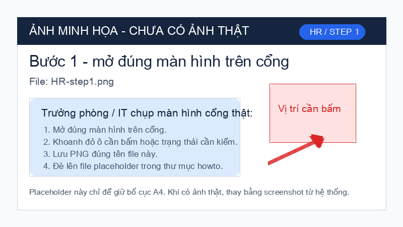
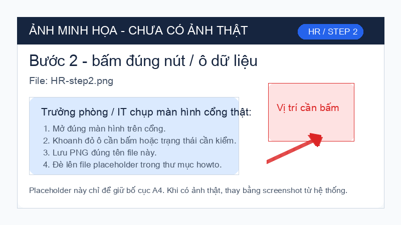
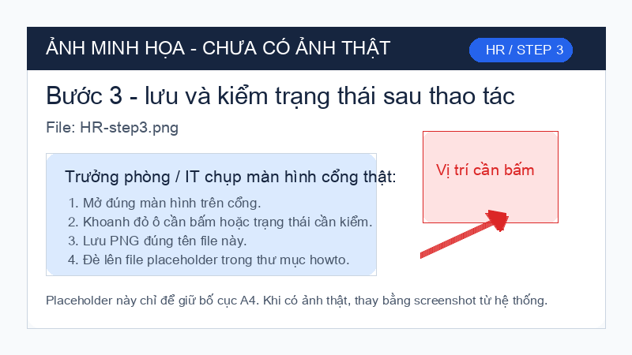

Mục 1. Việc 1: Nhân sự kiểm năng lực trước khi cho đứng máy.

- Bước 1: HR mở hồ sơ nhân sự và nhập mã nhân viên.
- Bước 2: Bấm "Năng lực", kiểm chứng nhận máy và hạn hiệu lực.
- Bước 3: Bấm "Đủ điều kiện" hoặc "Không cho đứng máy".
Lỗi thường gặp: chứng nhận hết hạn. Cách sửa: đưa vào danh sách đào tạo lại.
Tôi sai → gọi ai trong 5 phút:
Người dẫn dắt phòng: [đang tải…]
Người dự phòng: [đang tải…]
Quản đốc (nếu không gọi được 2 số trên): ____ (điền tay khi in)
Mục 2. Việc 2: HR lấy chữ ký OJT ngay trong ca đào tạo.

- Bước 1: Mở ca đào tạo, bấm "OJT".
- Bước 2: Cho người học và người hướng dẫn ký ngay trên phiếu.
- Bước 3: Bấm "Lưu", kiểm trạng thái "Đã ký đủ".
Lỗi thường gặp: thiếu chữ ký người hướng dẫn. Cách sửa: gọi ký trước khi hết ca.
Tôi sai → gọi ai trong 5 phút:
Người dẫn dắt phòng: [đang tải…]
Người dự phòng: [đang tải…]
Quản đốc (nếu không gọi được 2 số trên): ____ (điền tay khi in)
Mục 3. Việc 3: Nhân sự cập nhật người dẫn dắt khi đổi vai.

- Bước 1: Mở danh sách người dẫn dắt theo phòng.
- Bước 2: Bấm tên người cũ, chọn người mới và người dự phòng.
- Bước 3: Bấm "Lưu", in lại thẻ phòng nếu tên đổi.
Lỗi thường gặp: người mới chưa có quyền. Cách sửa: gửi yêu cầu IT cấp quyền.
Tôi sai → gọi ai trong 5 phút:
Người dẫn dắt phòng: [đang tải…]
Người dự phòng: [đang tải…]
Quản đốc (nếu không gọi được 2 số trên): ____ (điền tay khi in)
Mục 4. 5 sự cố mong đợi tuần đầu
| Triệu chứng | Nguyên nhân | Tôi tự xử | Tôi PHẢI gọi |
|---|---|---|---|
| Người chưa đủ năng lực đứng máy | Hồ sơ hết hạn | Dừng phân công | Tôi PHẢI gọi: Quản đốc — ______ |
| OJT chưa ký | Quên ký trong ca | Gọi ký ngay | Tôi PHẢI gọi: Trưởng phòng — ______ |
| Không tìm thấy mã nhân viên | Sai mã hoặc chưa đồng bộ | Kiểm lại danh sách | Tôi PHẢI gọi: IT trực — ______ |
| Người dẫn dắt đổi vai | Chưa cập nhật thẻ | Sửa danh sách | Tôi PHẢI gọi: QMS — ______ |
| Sự cố lao động | Thiếu ghi nhận EHS | Dừng việc liên quan | Tôi PHẢI gọi: EHS — ______ |